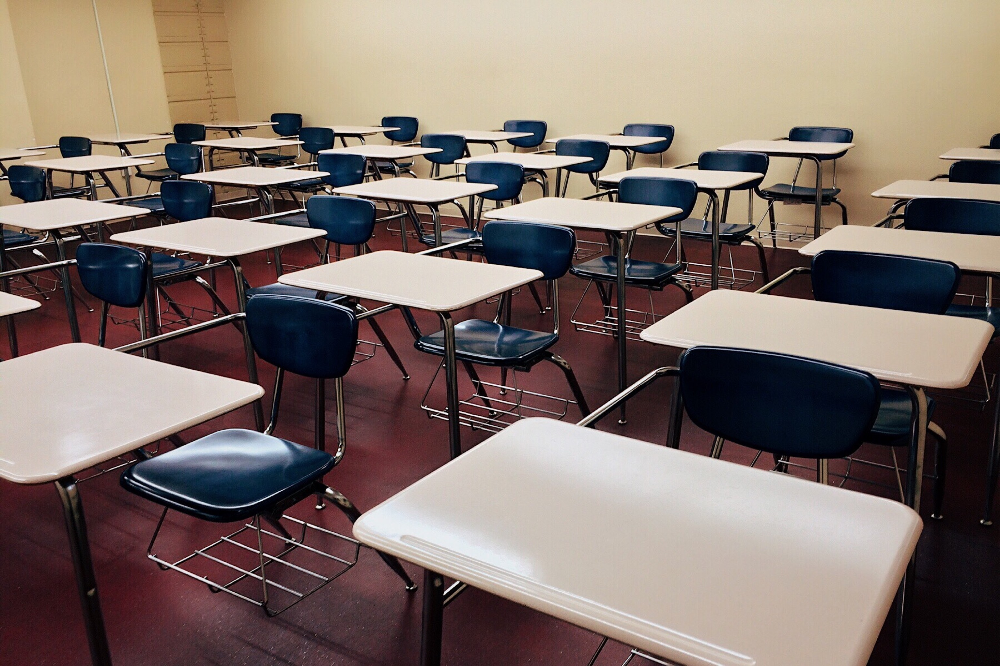
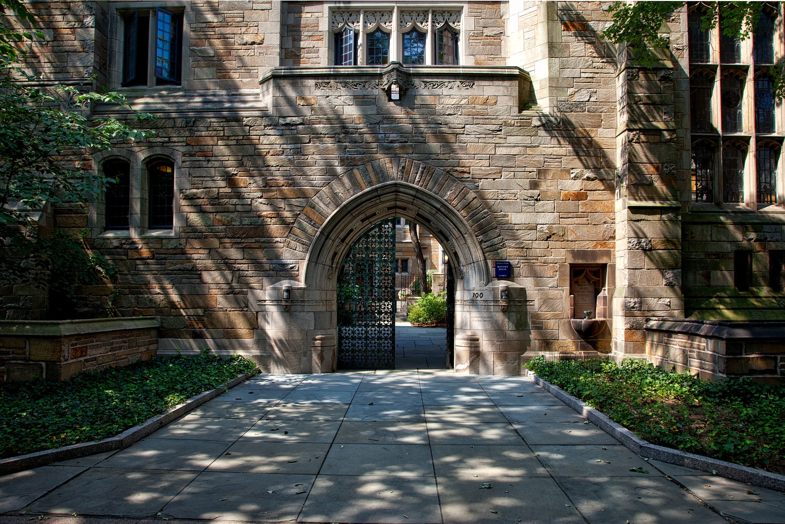

School Life

|
GHS KUGUR:-
Government High School Kugur is a government-aided
school in Kugur village, Anekal taluk,
Karnataka that
offers high school education from class 8 to 10. The
school follows the
Karnataka state board syllabus and
aims to provide free and quality education to the rural
and underprivileged students. The school has a modest
campus with facilities like classrooms,
library,
playground and toilets. The school also conducts
various community service and awareness
programs to improve the social and environmental conditions of the village.
|
My PUC College

|
SSVN PU COLLEGE :-
Sri Saraswathi Vidyanikethana P U College in
Dommasandra is a co-educational institution that
offers pre-university and high school education
in science, commerce and arts streams. The college
follows the Karnataka state board syllabus and
aims to provide quality education and holistic
development to its students. The college has
a well-equipped campus with facilities like library,
laboratory, computer center, sports ground, auditorium and canteen. The college also organizes
various co-curricular.
|